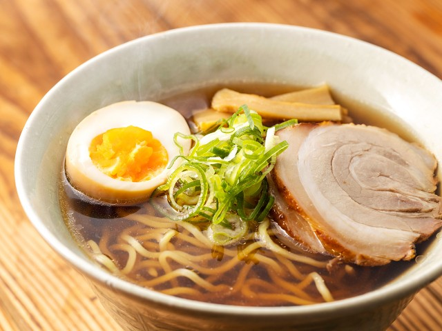

Ramen ラーメン

Description
Ramen is a Japanese noodle dish. It consists of wheat noodles served in a broth;
common flavors are soy sauce and miso, with typical toppings including sliced pork, nori, menma, and scallions.
Ramen has its roots in Chinese noodle dishes.
Ingredients
Soup
- Water
- Soy Sauce
- Chicken Broth
- Oyster Sauce
- Garlic
- Salt
- Pepper
Other
- Noodles
- Pork
- Scallions
- Boiled Egg
Steps
- First make the soup by boiling water and adding the seasoning ingredients.
- Cook the noodles.
- Pour the soup in a bowl and add the noodles, then place the pork, scallions and boiled egg on top.
Home